Analiza rješenja · JOI Spring Camp 2021 · Dan 4
Najgori reporter 4
O ovom članku
Tekst je prijevod službene japanske prezentacije rješenja, preoblikovan u članak. Slajdovi su ugrađeni kao slike; natpis pod svakim slajdom je prijevod teksta na njemu. Dijelovi označeni kao trenerska napomena nisu u izvornoj prezentaciji — dodani su da popune korake koje slajdovi preskaču ili samo skiciraju.
-
1Naslovni slajd: Worst Reporter 4; analiza: Kishida Riku. -
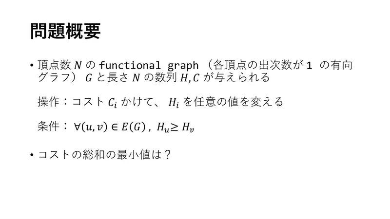
2Sažetak. Funkcionalni graf $G$ s $N$ vrhova i nizovi $H, C$. Operacija: za $C_i$ promijeni $H_i$ proizvoljno. Uvjet: $H_u \ge H_v$ za svaki brid $(u, v)$. Minimalan trošak? -
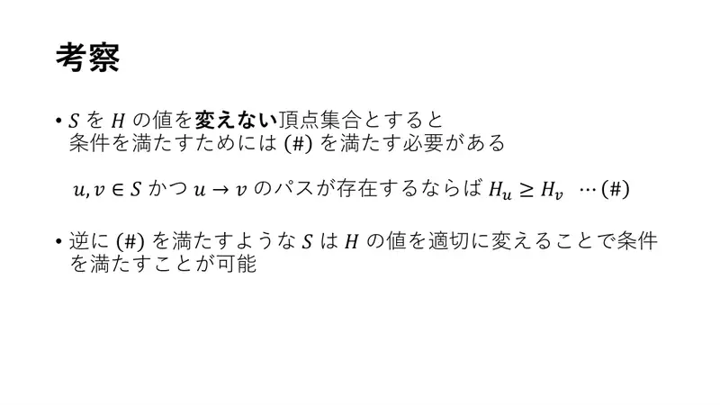
3$S$ = vrhovi čiji $H$ ne mijenjamo. Nužno (#): $u, v \in S$ i postoji put $u \to v$ ⇒ $H_u \ge H_v$. Obratno, svaki $S$ koji zadovoljava (#) može se dopuniti. -
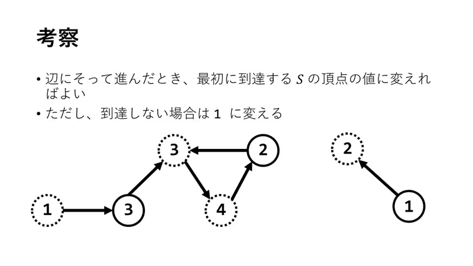
4Dopuna: vrhu izvan $S$ daj vrijednost prvog vrha iz $S$ na koji naiđe slijedeći bridove… -
5…a ako ga nema, daj mu 1. -
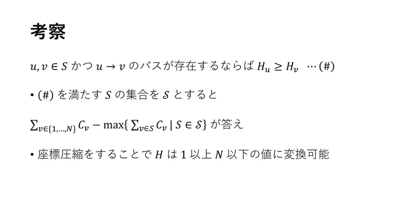
6Odgovor $= \sum_v C_v - \max\{\sum_{v\in S} C_v : S \in \mathcal S\}$. Kompresijom je $H \in [1, N]$.
Podzadatak 1 14 bodova
-
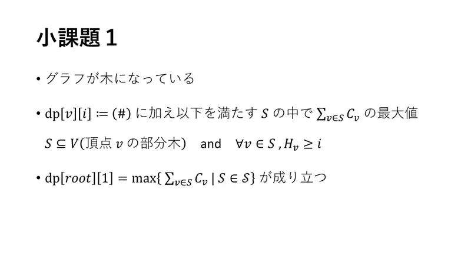
7Graf je stablo. $dp[v][i]$ = najveći $\sum C$ po $S \subseteq$ podstablo$(v)$ koji zadovoljava (#) i $H_u \ge i$ za sve $u \in S$. Rezultat $dp[\text{root}][1]$. -
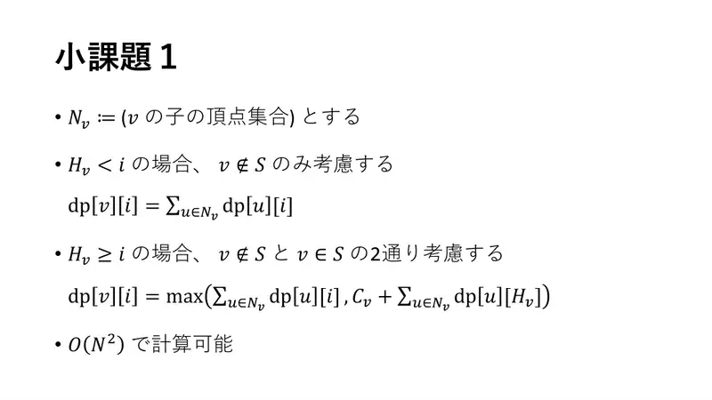
8$N_v$ = djeca. $H_v < i$: $dp[v][i] = \sum_{u} dp[u][i]$. $H_v \ge i$: $dp[v][i] = \max(\sum_u dp[u][i],\ C_v + \sum_u dp[u][H_v])$. $O(N^2)$.
Podzadatak 2 65 bodova
-
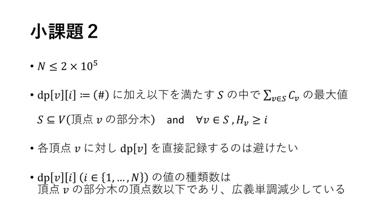
9$N \le 2\cdot10^5$: ne želimo čuvati cijeli $dp[v]$. Broj različitih vrijednosti $dp[v][i]$ je $\le$ veličine podstabla, a funkcija je nerastuća. -
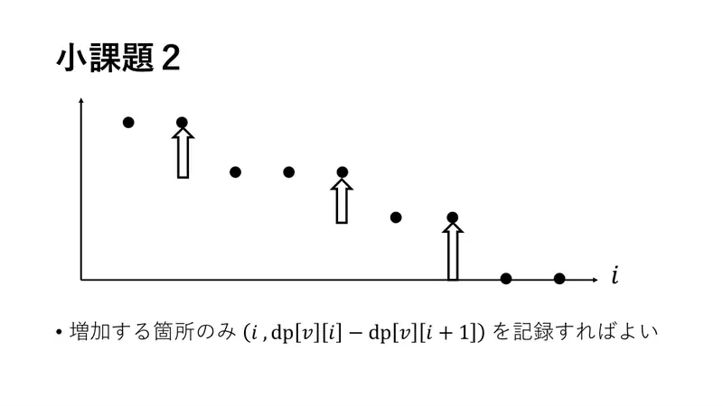
10Čuvaj samo mjesta rasta: parove $(i, dp[v][i] - dp[v][i+1])$. -
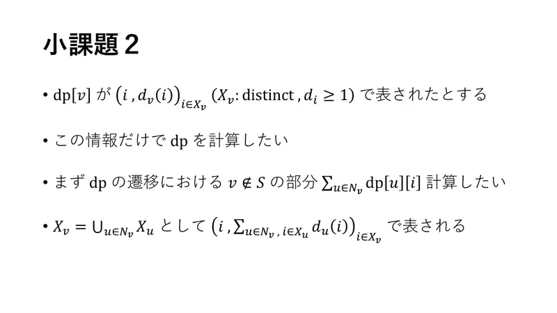
11$dp[v]$ zapisan kao $\{(i, d_v[i])\}_{i \in X_v}$. Dio „$v \notin S$”: $\sum_u dp[u][i]$ odgovara uniji ključeva i zbrajanju razlika po ključu. -
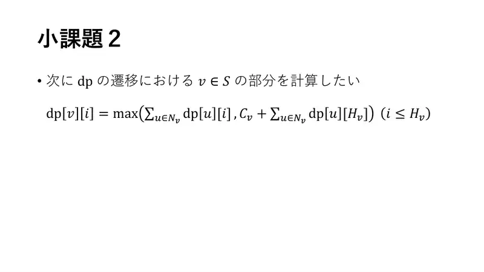
12Dio „$v \in S$”: $dp[v][i] = \max(\sum_u dp[u][i], C_v + \sum_u dp[u][H_v])$ za $i \le H_v$. -
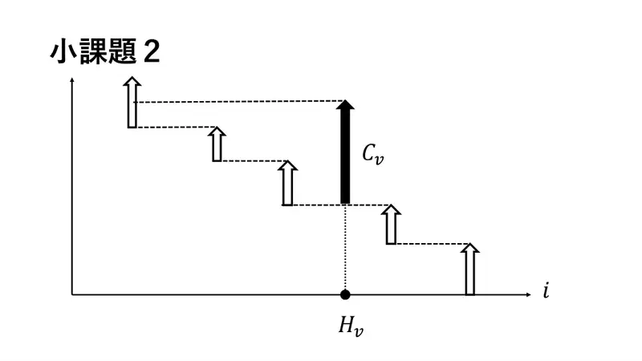
13Slika: funkcija $F$ i konstanta $C_v + F(H_v)$ ispod $H_v$. -
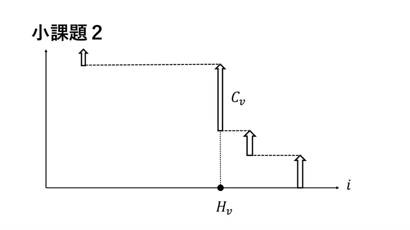
14Maksimum: skok za $C_v$ na $H_v$, a rast ispod $H_v$ „progutan” do iznosa $C_v$. -
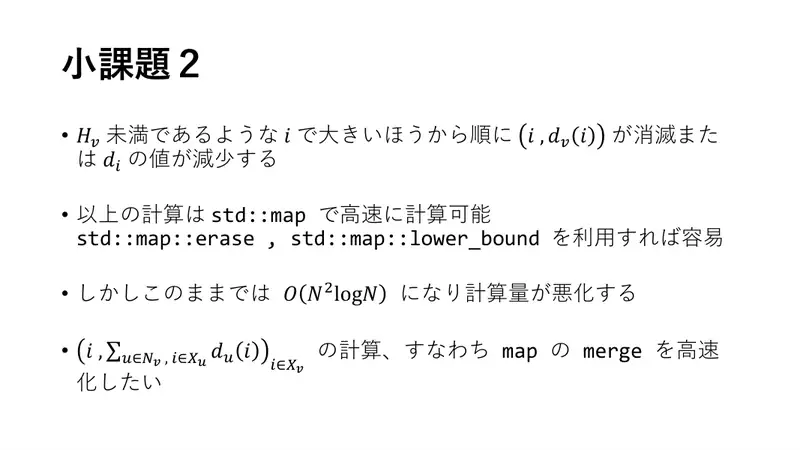
15Za $i < H_v$ od najvećeg prema manjima unosi nestaju ili im se $d$ smanjuje — lako s std::map::lower_bound/erase. Ali spajanje mapa naivno daje $O(N^2\log N)$. -
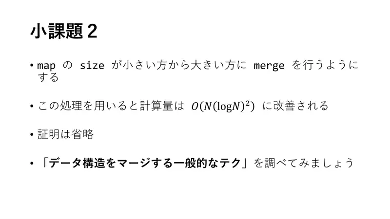
16Spajaj manju mapu u veću → $O(N\log^2 N)$ (dokaz izostavljen; „tehnika spajanja struktura podataka”, small-to-large).
Podzadatak 3 21 bod
-
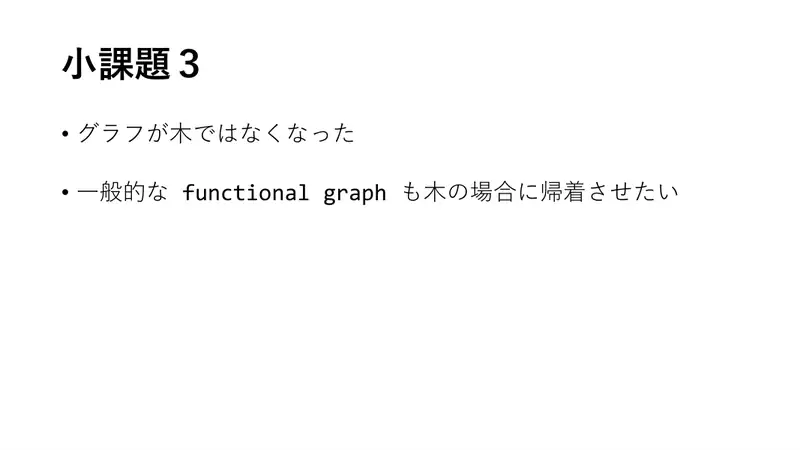
17Graf više nije stablo; želimo svesti opći funkcionalni graf na stablo. -
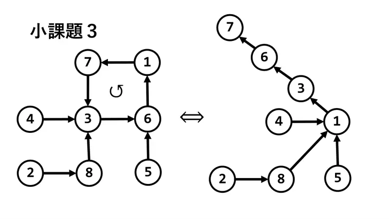
18Primjer: ciklus s vrijednostima 2, 3, 8, 6 postaje lanac 8 → 6 → 3 → 2 (od korijena prema dolje), a viseći dijelovi idu na vrh s najmanjim $H$. -
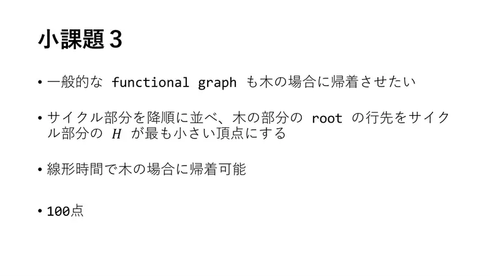
19Ciklus poredaj silazno, korijene visećih stabala preusmjeri na vrh ciklusa s najmanjim $H$. Linearno; 100 bodova.
Alternativno rješenje $O(N\log N)$
-
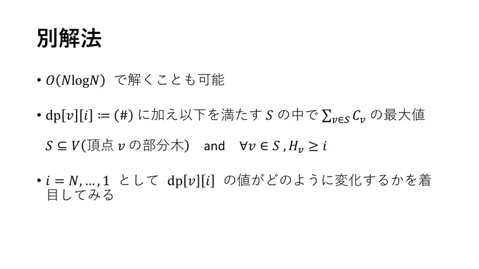
20Isti $dp[v][i]$; promatraj kako se mijenja kad $i$ ide $N, \dots, 1$. -
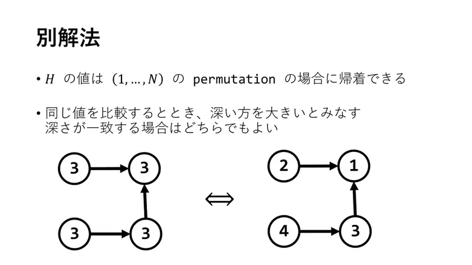
21Svedi $H$ na permutaciju: kod jednakih vrijednosti dublji vrh smatraj većim (kod jednake dubine bilo koji). -
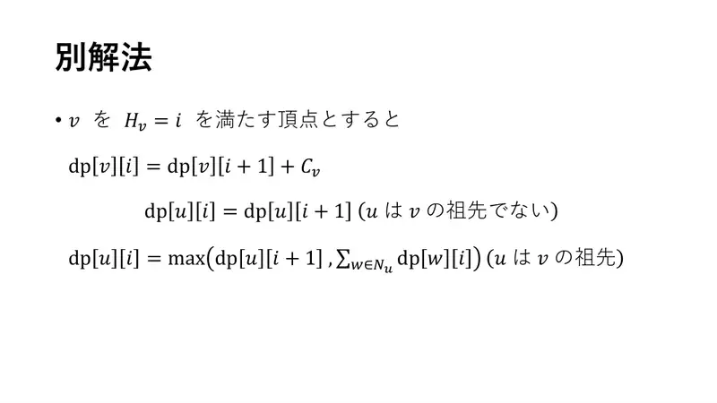
22Neka $H_v = i$. Tada $dp[v][i] = dp[v][i+1] + C_v$; za ne-pretke $dp[u][i] = dp[u][i+1]$; za pretke $dp[u][i] = \max(dp[u][i+1], \sum_w dp[w][i])$. -
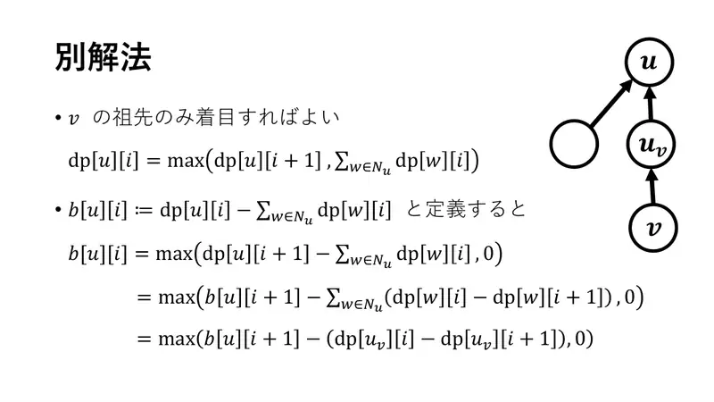
23Samo preci su bitni. $b[u][i] := dp[u][i] - \sum_w dp[w][i] = \max(b[u][i+1] - (dp[u_v][i] - dp[u_v][i+1]), 0)$, gdje je $u_v$ dijete od $u$ prema $v$. -
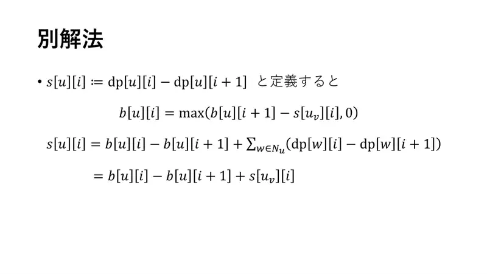
24$s[u][i] := dp[u][i] - dp[u][i+1]$: $b[u][i] = \max(b[u][i+1] - s[u_v][i], 0)$ i $s[u][i] = b[u][i] - b[u][i+1] + s[u_v][i]$.
-
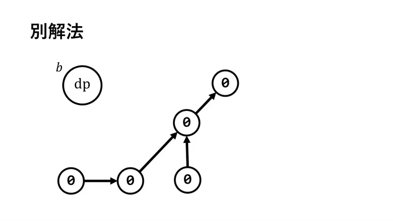
25Početno: svi $dp = 0$, $b = 0$. -
26Dodan vrh s $C = 3$: $dp$ na putu do korijena raste za 3; njegov $b = 3$. -
27Dodan list s $C = 1$ u drugoj grani: prirast 1 putuje gore, apsorbira 1 od bonusa 3 (ostaje 2); $dp$ iznad ne raste. -
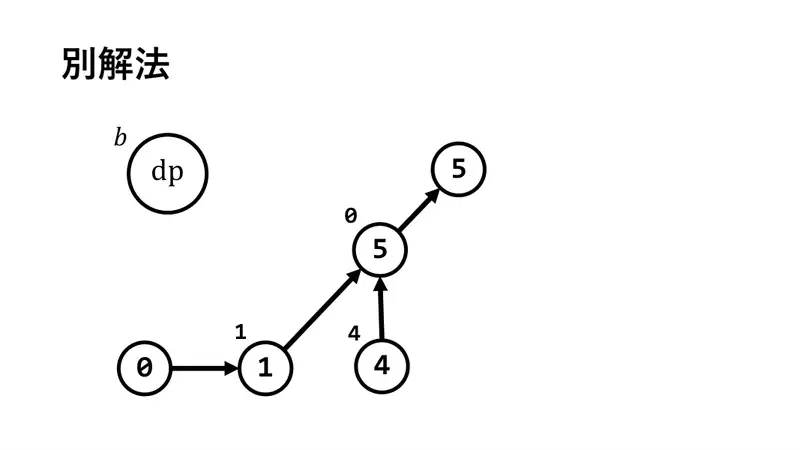
28Dodan vrh s $C = 4$: apsorbira preostali bonus 2, prolazi 2 dalje: $dp$ korijena 5. -
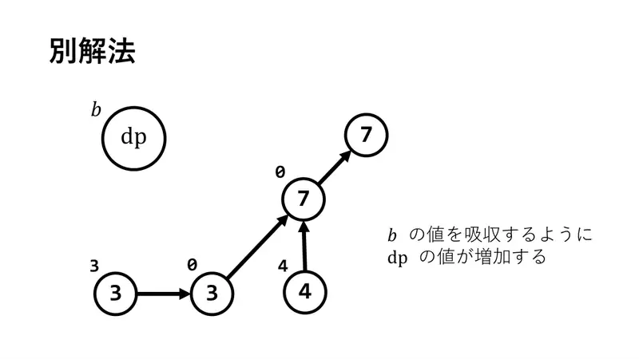
29Dodan još jedan s $C = 3$: apsorbira bonus 1, prolazi 2: korijen 7. $dp$ raste tako da „upija” vrijednosti $b$.
-
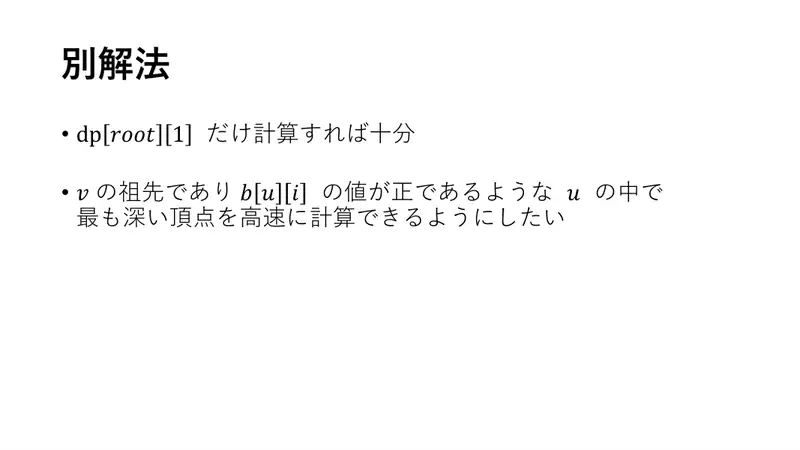
30Dovoljno je $dp[\text{root}][1]$. Treba brzo: najdublji predak $u$ od $v$ s $b[u] > 0$. -
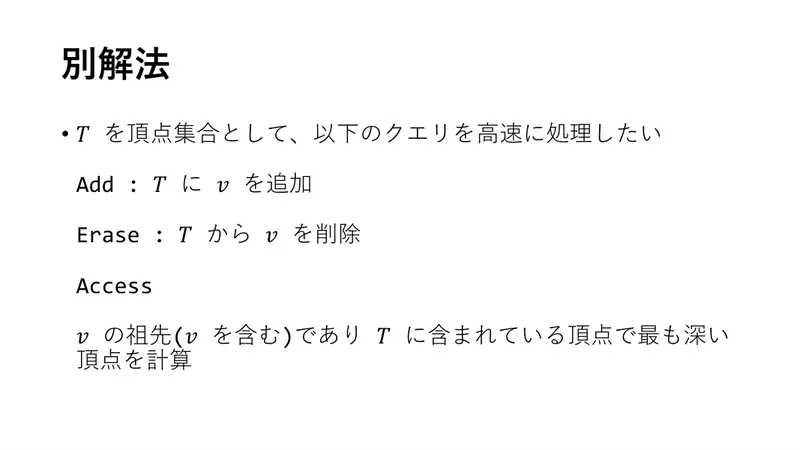
31Skup $T$ označenih vrhova; operacije Add($v$), Erase($v$), Access($v$) = najdublji označeni predak (uključivo). -
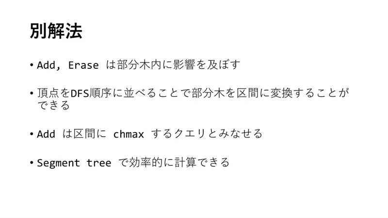
32Add/Erase utječu na podstablo → DFS poredak pretvara podstablo u interval; Add je „chmax po dubini” na intervalu → segmentno stablo. -
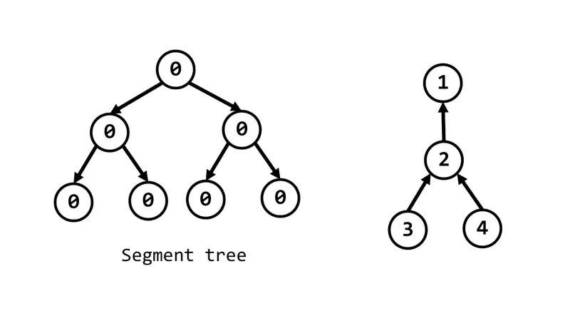
33Segmentno stablo nad DFS poretkom, sve 0. -
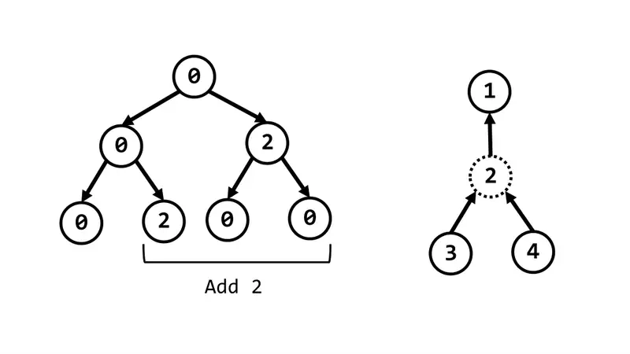
34Add 2: interval podstabla vrha 2 dobiva 2 (u kanonskim čvorovima). -
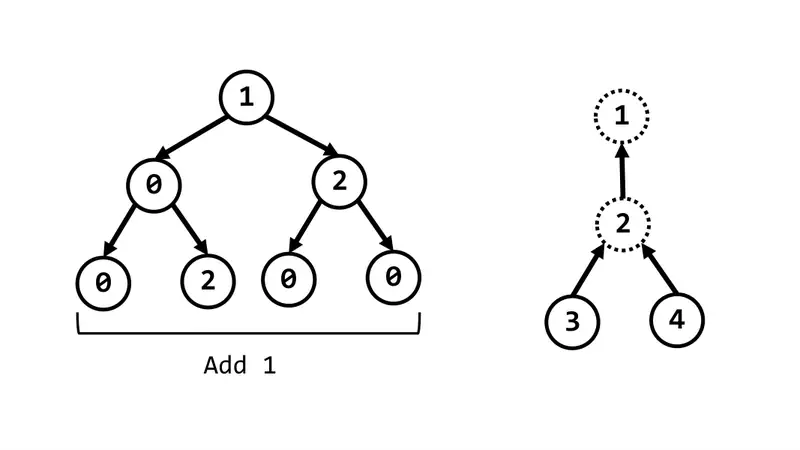
35Add 1: korijen intervala dobiva 1; dublje oznake ostaju. -
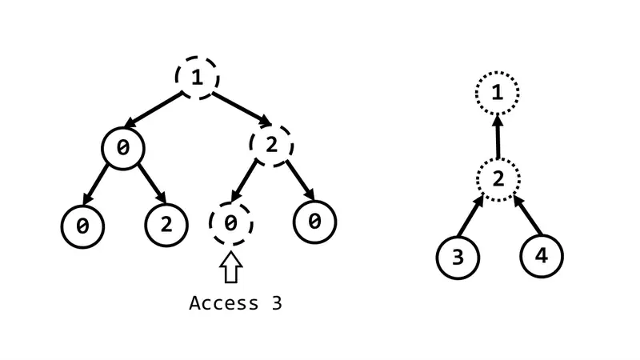
36Access 3: maksimum po dubini duž puta korijen–list → 2. -
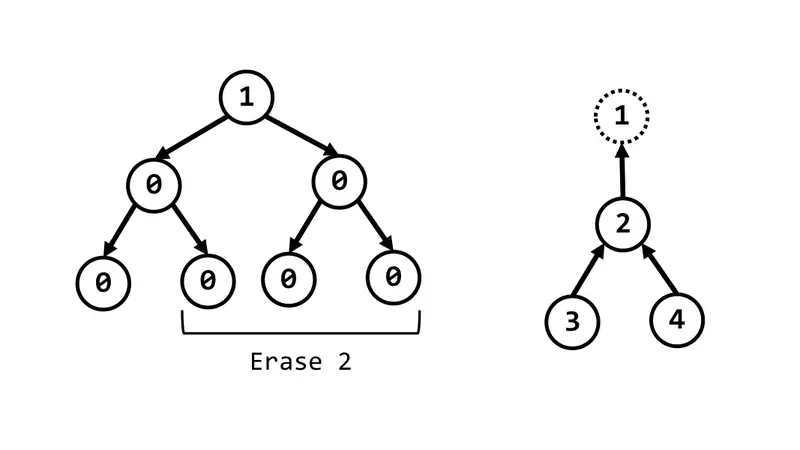
37Erase 2: kanonski čvorovi s vrijednošću 2 vraćaju se na 0… -
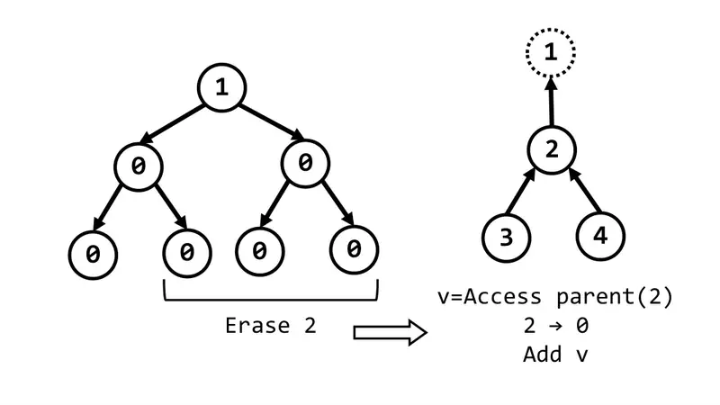
38…pa se ponovno doda $v = \text{Access}(\text{parent}(2))$ na isti interval da se ne izgubi pliće označen predak. -
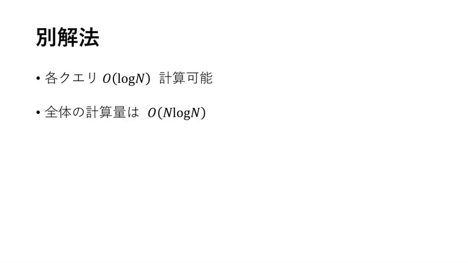
39Svaka operacija $O(\log N)$; ukupno $O(N\log N)$.
-
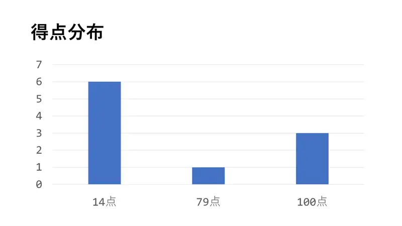
40Raspodjela bodova: 0, 14, 79, 100.
Sažetak
- Biramo skup nepromijenjenih; uvjet (#) je nužan i dovoljan.
- $dp[v][i]$ nerastuća funkcija → mapa razlika; uzimanje $v$ = $+C_v$ na $H_v$ i odsijecanje $C_v$ ispod; spajanje small-to-large.
- Ciklus → lanac po padajućem $H$, viseća stabla na najmanji.